何孟娟
English Name
班級導師

對軟體與硬體有興趣.喜歡運動.對有興趣的學習有很大的熱忱.喜歡玩遊戲.喜歡認識新朋友.參加過FRC、3D列印龍舟、python比賽、機器人循跡、資通訊大賽
林瓊甄
Tracey
資訊老師
林瓊甄老師
*現任：臺北市立內湖高級中學 資訊教師
*經歷：擔任學校資訊組長、註冊組長、系統師、技部高瞻計畫內湖高中課程研發教師團隊、 擔任學校特色班資訊班(第3屆、第7屆、第11屆)資訊教師培育人才
*最高學歷：國立高雄師範大學資訊教育所碩士
*教學理念：教學教人，不曾停歇。非常幸運地，可以從事這個生命影響生命的工作，教學工作帶給我的成就感莫過於學生多年後回憶，我課堂上的一句讚美成為他往後學習的動力!
丁建凱
Kevin
20801
我17歲，單身，住台北市，是加拿大公民，目前無業，學歷：Stanford University CS，資歷：前Google首席程式設計師，因為愛好環保，所以每天搭大眾運輸工具上下學。
江竑燁
Vincent
20802

I am a person who loves programming and has won many awards in various competitions. I have participated in FRC and hope to participate in WWDC23 this year. I am proficient in various programming languages, with a special focus on JAVA. I also enjoy music and play the cello and piano in my spare time. My ultimate goal is to become a software engineer, especially at APPLE. I have achieved the gold star ranking on hackerrank and have completed 15 questions on leetcode. I have extensive experience in leading teams as the president of the robotics club./n I believe that through hard work and determination, one can achieve high goals. In addition to programming, I am also passionate about music and enjoy listening to various genres in my free time. Music brings endless joy and emotion to my life and is a great way for me to relax. Overall, I am a curious and ambitious person who is always looking to challenge myself and improve my skills. I hope to continue learning and developing as a software engineer, striving to be the best that I can be.
何宇翔
Andy
20803
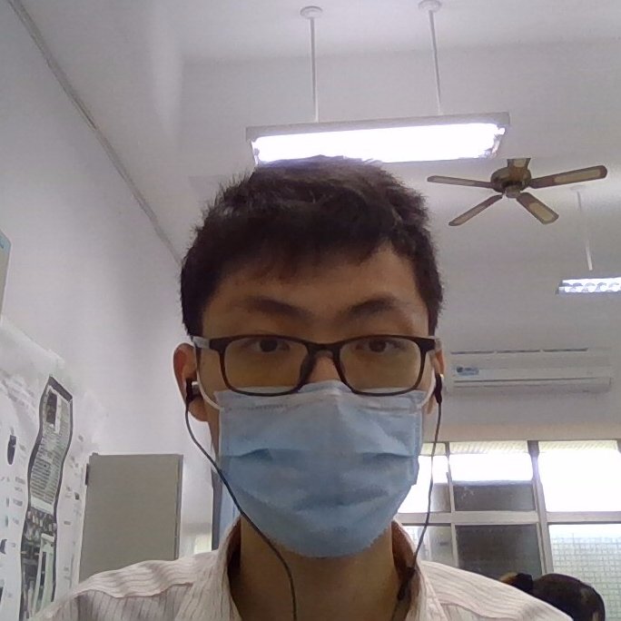
幽默、樂觀、開朗
李承翰
Johan
20804

1.對軟體與硬體有興趣
2.喜歡運動
3.對有興趣的學習有很大的熱忱
4.喜歡玩遊戲
5.喜歡認識新朋友
6.參加過FRC、3D列印龍舟、python比賽、機器人循跡、資通訊大賽
邱子桀
Jay
20805
對軟體與硬體有興趣.喜歡運動.對有興趣的學習有很大的熱忱.喜歡玩遊戲.喜歡認識新朋友.參加過FRC、3D列印龍舟、python比賽、機器人循跡、資通訊大賽
胡宸瑋
Wesley
20806

大家好我是內中學生會學動長胡宸瑋
張昭明
Roger
20807
對軟體與硬體有興趣.喜歡運動.對有興趣的學習有很大的熱忱.喜歡玩遊戲.喜歡認識新朋友.參加過FRC、3D列印龍舟、python比賽、機器人循跡、資通訊大賽
張喆崴
Louis
20808

我是一個很樂觀的人，做任何事都全力以赴，即便失敗了也不會氣餒，從中檢討失敗的原因，不再犯一樣的錯誤。俗話說：「世界上每個人都在追求快樂，而一個人快樂與否，取決於你對各事物抱持的態度和看法。」我深信不疑，所以我都保持一顆正向的心，去看待每一件事物。很榮幸在高一下擔任班長，雖然常常要集合、處理班級事務，但我很高興能為班上服務，增加我的領導能力。在課餘時，我喜歡到機場或航道看飛機，對我來說，看到一架飛機降落，象徵成功的機會來了，要好好把握；看到一架飛機起飛，象徵我的夢想被帶到天空中，只要再多努力，一定能實現。「機會永遠留給準備好的人。」而我時常透過聽音樂緩解情緒、減輕壓力，對我來說，聽音樂能讓我身心靈放鬆，達到舒緩的效果。
💗🇰🇷🇰🇷🇰🇷💗
莊道程
Cris
20809
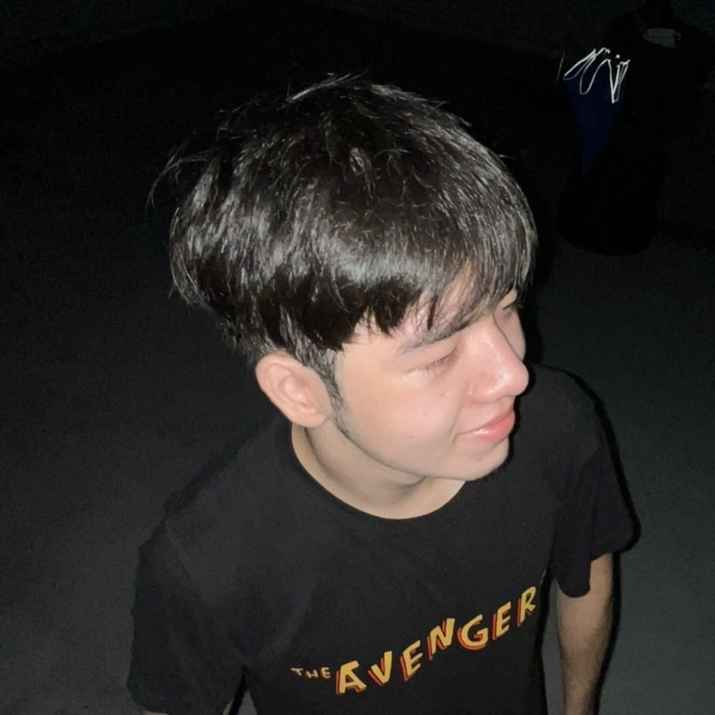
我來自台灣U call me饅頭娃娃~
連建勳
Tim
20810
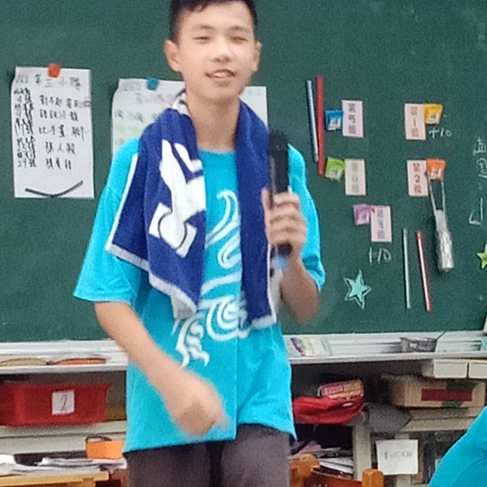
我叫連建勳
在高雄出生
我會彈鋼琴
我國小讀敦化國小音樂班
國中也讀音樂班
高中讀內湖高中
高一是118班
我的個性開朗
喜歡交友
我會打桌球
可以來找我打桌球
我喜歡聽音樂
我每天都會聽音樂
各種風格的音樂都會聽
郭哲宇
Louie
20811

我是郭哲宇，興趣是打電動跟打電動跟打電動
陳俊霖
JUN
20812

大家好，我是陳俊霖，我喜歡聽音樂，也喜歡看劇，是一位雙魚座的男生，從小在基隆長大，家門前便是火車站，每天都可以聽到火車親吻鐵軌的聲音，不知不覺中，那種聲音我已經習慣而無法察覺，基隆也被大家叫雨都，每天都在下雨，傘已經成為每天的必帶之物。目前是桌遊社社長，也擔任過8班的總務和副班長，將要成為班長，希望接下來的每個時光都能充實且完美，每次考試都能持續精進。
陳培允
Patrick
20813
對軟體與硬體有興趣.喜歡運動.對有興趣的學習有很大的熱忱.喜歡玩遊戲.喜歡認識新朋友.參加過FRC、3D列印龍舟、python比賽、機器人循跡、資通訊大賽
曾維晨
wcT
20814
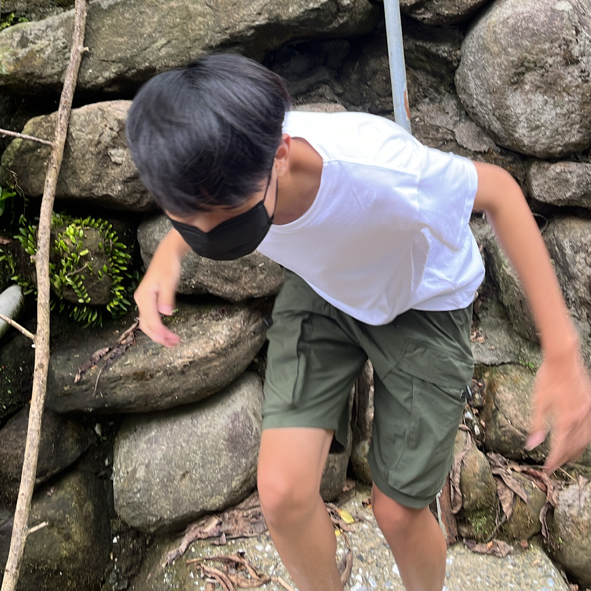
我是曾維晨，我的興趣是打電動、打籃球，然后上地理課喜歡睡覺。
溫喆皓
Nelson
20815
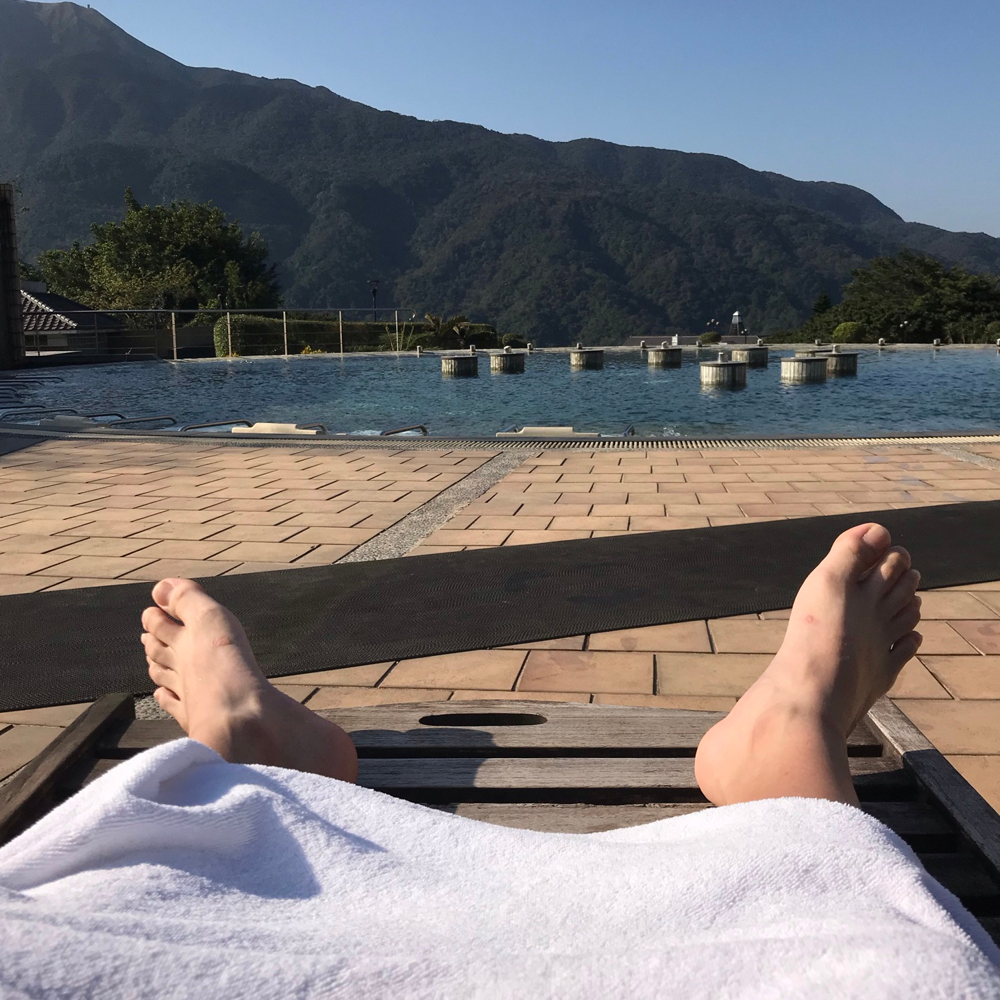
我叫温喆皓，可以叫我喆皓，摩羯座生日1/3，平常喜歡打球騎車、聽音樂自嗨，嚮往大自然生活，露營爬山看海，坐不住的孩子，減肥減的很痛苦，願天下所有努力減肥的人，不被無良的朋友嘲笑，這條路上有你我，一起加油💪
詹育綸
Austin、月亮
20816

蛙洗詹育綸，是個台北人，生日是8/6個性很隨意（看情況
平常喜歡聽音樂，但沒有特別喜歡的歌手，只要是好聽的歌都好~
除此之外我也是個喜歡睡覺和吃美食的人。
趙威翔
帥哥
20817

我叫趙威翔 喜歡打球運動 不太擅長讀書 個性樂觀開朗
劉丞閔
Eric
20818

我是劉丞閔，我平時喜歡打羽球，逛街，看美劇，睡覺
蔡王竤
Jimmy
20819

大家好，我是蔡王竤。幼稚園大班曾到新加坡去讀書，到國小五年級結束後才回到台灣。我平常喜歡到處去看風景或是球賽，並將在現場每一個重要的瞬間紀錄下來。我也很喜歡打羽球，是成長過程中最早接觸到的球類運動，如果場地允許的話，我也很樂意和朋友打羽球。
蔡適禧
tsai4c
20820
大家好，我是蔡適禧，興趣是打電動、聽音樂、看小說和散文。最愛的散文作家是張曼娟，最喜歡的歌手是milet，最喜歡的dj是Zedd。
盧偉嘉
Nick
20821
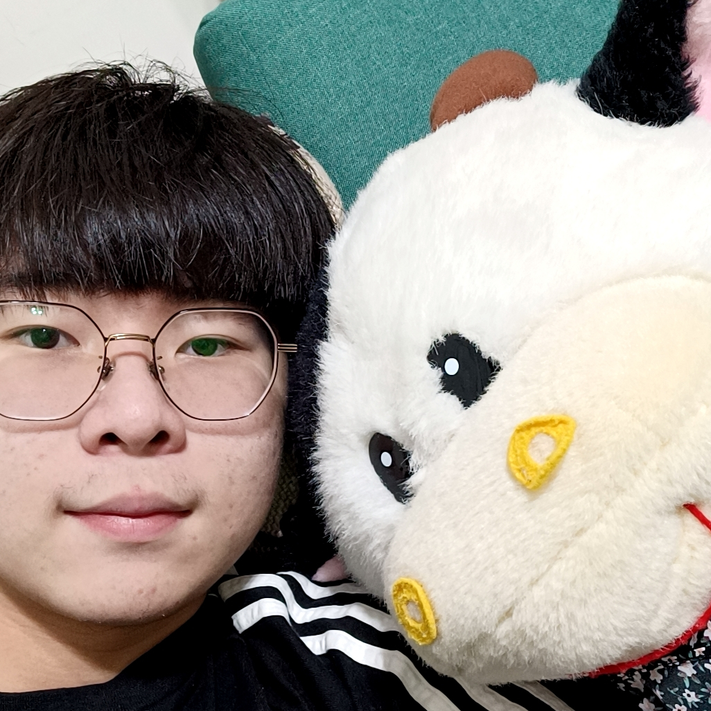
大家好，我是盧偉嘉，天蠍座，出生於94年11月12號，要當一年的兵。我是個熱愛打球的孩子，上學期間，結束一天繁忙且勞累的課程，我會想盡辦法抽空在籃球場上揮灑汗水、釋放壓力，我也熱愛跟同學齊聚享受美食，例如拉麵、火鍋、吃到飽等。
簡上豪
Uphao
20822

我個人認為這個意大利面就應該拌42號混凝土，因為這個螺絲釘的長度，它很容易會直接影響到挖掘機的扭矩，你知道吧?你往里砸的時候，一瞬間它就會產生大量的高能蛋白，俗稱UFO，會嚴重影響經濟的發展，甚至對這個太平洋以及充電器都會造成一定的核污染
簡新城
Ben
20823
我是個在假日平時不怎麼出門，平日跟假日過的剛好相反的人，在假日反而沒事做就在打code，目前在玩貓咪大戰爭及其模組、FGO（我是在寶底才抽到腳色的非酋）、元氣騎士（平時沒網路）、純白和弦（浠其實蠻香的）。FGO、貓站、元氣盡乎全破。我生處次文化，能回答有關各種次元的問題［異次元、元宇宙、動漫次元（二次元）］，沒有特別的Vtuber喜好，但絕不是DD，而是守護世界和平的一員，此外，雖說動漫界老婆老公無數，每隔幾月就多了一兩個伴侶也算正常，但實際上也沒錢買周邊（沒錢）。程式能力還不錯（是個在資訊剛要做期末報告時，打130行程式還不滿足的辣個男人，目標是打完200行，且讓它成為讓喜歡亂輸入的人也會變乖的終極程式），在班上因該算有排名，老師剛出作業寫完就Po在Gmail，意義不好在此說明；而我也是個十足的工具人，不管或大或小的問題各種人都會問我，譬如做我左邊的那個媽寶。
闕筵庭
Tim
20824
我是闕筵庭，是闕不是關，現在是資研社社長，我超級偏科，數理很好，英文超爛，希望我的英文可以上來，目標頂大GOGOGO。
王瑋潞
圍爐
20825
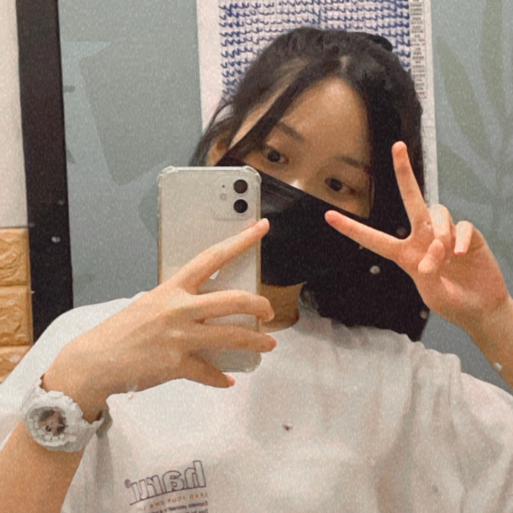
五一五，五二十，五三十五。我的興趣跟專長是睡覺，需要十二小時睡眠。是吃巧克力不吃巧克力口味餅乾的怪人。他們說我笑點很奇怪，但是真的很好笑啊！哈哈哈哈哈哈瘋子。
周品妤
Doris
20826
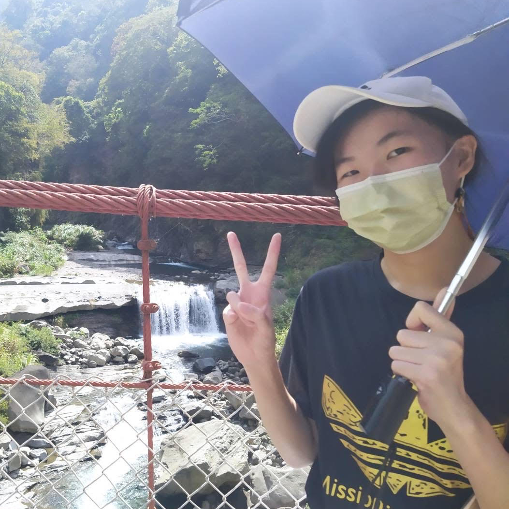
みなさんこんにちは！我是周品妤，是個隨和脾氣好，但怕生且沒自信的人。星座是金牛座，卻一點也不固執。興趣是仿畫動漫人物、和摺紙（蝴蝶）。擅長的科目是數學和物理。之所以在資訊班是想要增進資訊能力，期許能將所學的知識應用到未來的工作履歷上。雖然偶爾班上會惹出些令老師頭疼的蠢事，但相較於其他班，我更喜歡待在活力充沛的8班。很開心能與大家共同度過3年的高中生活。
林庭羽
Tina
20828

大家好，我是林庭羽，我是魔羯座，出生於2006/01/18，我的興趣是追劇、追星、看小說，我最喜歡的女明星是趙麗穎，男明星是楊洋，男團是TNT，我很固執、懶惰，也很消極、也欠缺幽默感，要求很多，缺點很多，但在危急時表現甚佳。不善外交，小心而保守。雖然速度比別人差一點，但因不斷的努力而能達到最後目標。
崔寶心
Venessa
20829
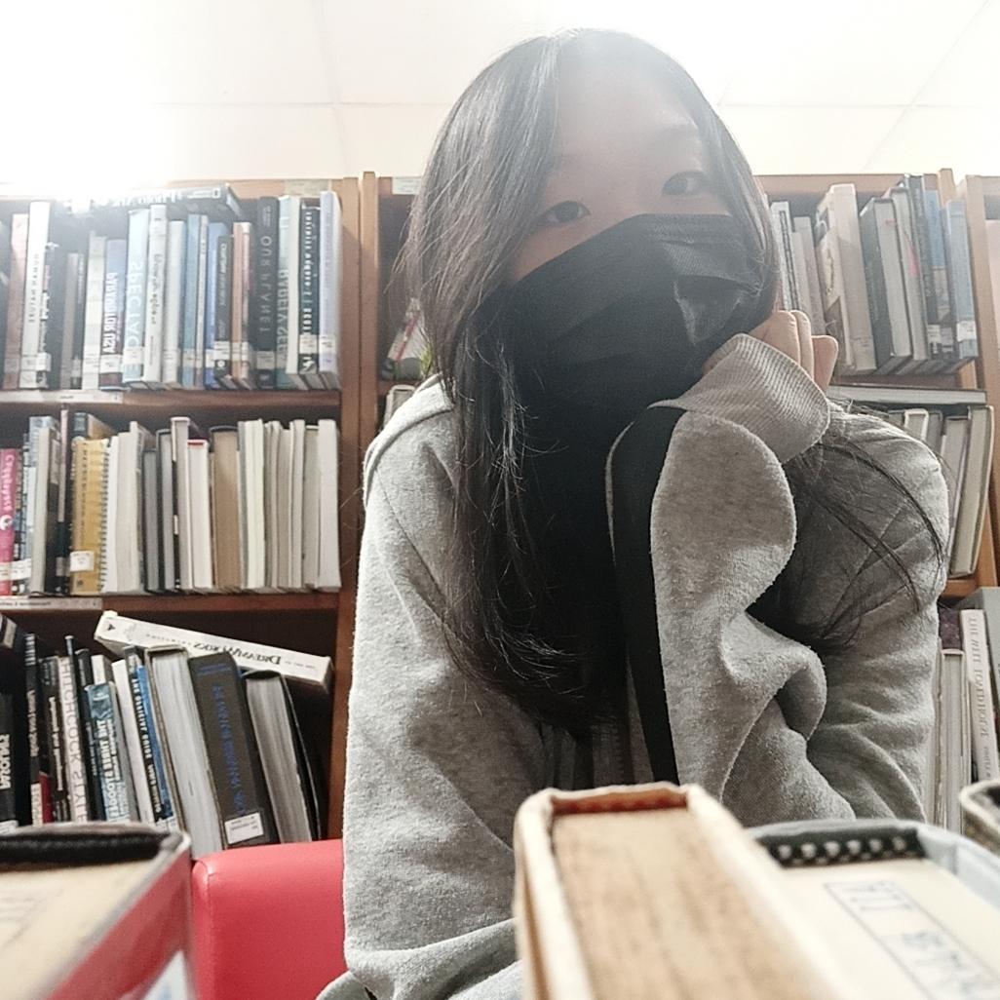
我是一個外表冷靜樂觀，實則ㄎㄧㄤ到谷底的人，有時候會作一些傻事，跟我聊天的人的說我很好聊，只要你願意跟我聊下去，我可以讓話題源源不斷，有些朋友說我情商很高，雖然平常憨憨的，但是真正在處理事情也是很靠譜的。是個十足的吃貨，身上基本上都會有食物（除非沒錢了），想找我聊天隨時歡迎，但有時候會當起網路神隱少女，聊一聊就人間蒸發請見諒。
許百秀
Special
20830

我是許百秀
也可叫我Special
我性格很real
生活過的很chill
最後希望我的自然won’t fail
楊家萱
楊芋片
20831
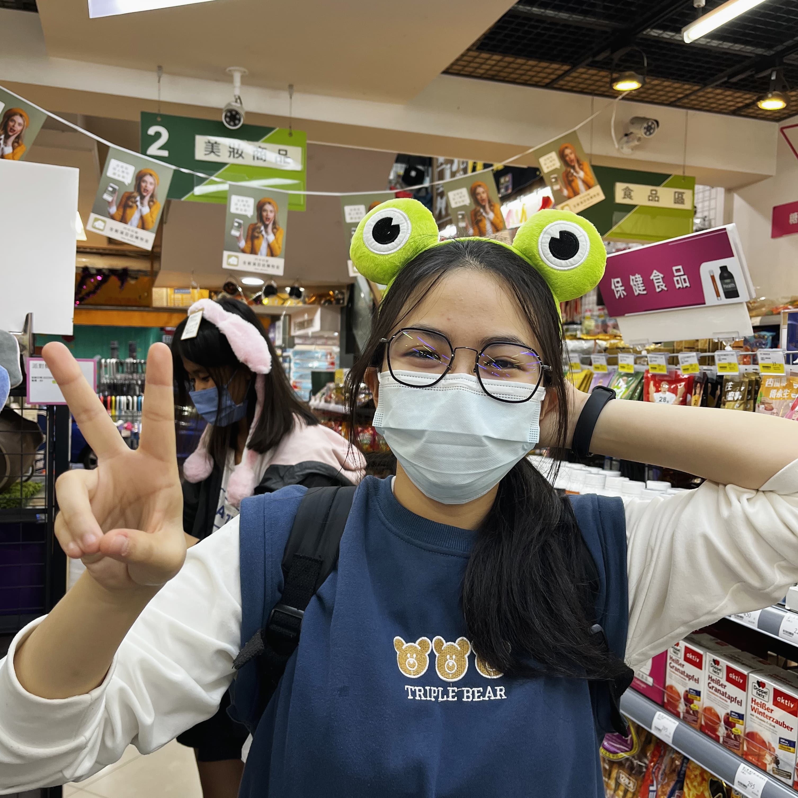
圈圈圓圓圈圈
萱萱圓圓萱萱
到底是圈圈圓圓圈圈
還是萱萱圈圈萱萱
啊~原來是二次函數大師的楊家萱。
萬芊妤
Cian
20832

我是善變且愛好自由的射手座♐，怕狗但喜歡貓咪，不喝牛奶也不喝奶茶，比起肉我更喜歡蔬菜，壞習慣是做事情喜歡拖和嚴重的選擇障礙，最喜歡的程式語言是python！
蒲芊伃
Pu、蒲萄糖
20834
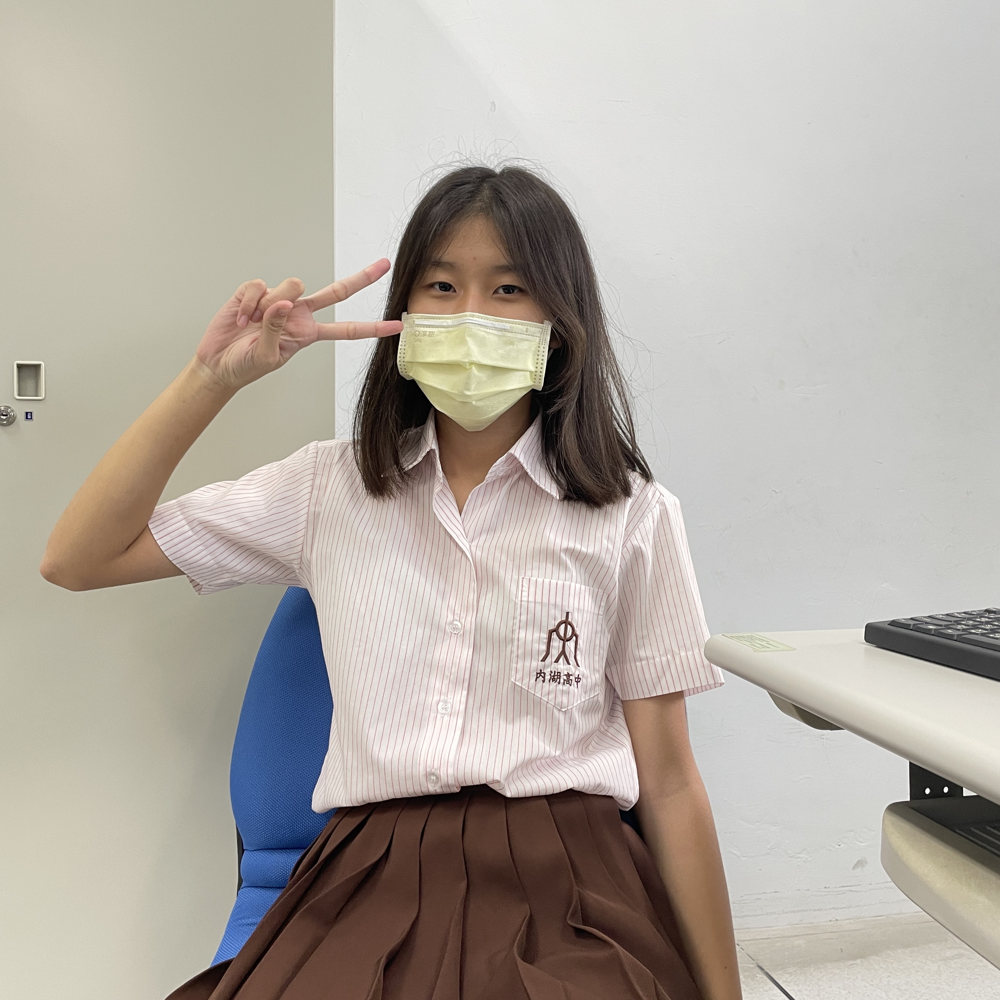
我是蒲芊伃，
看到蟲尖叫，
每天都很笑，
簡直像起笑，
感覺就像沒吃藥，
看到英文就亂掉，
很怕英文被fail，
希望班排不要掉，
害怕重補修還要來學校。